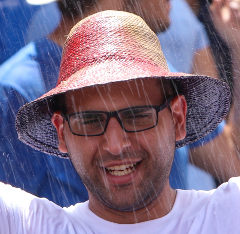

Luke Farrugia
IT and Operations Support Officer

Summary
I worked in the health IT sector for the last 5 years with the role of Senior IT and Operations Support Officer. For the last year, I also took part in the business side where alongside my colleagues we discuss features and functionality for a new application that is being developed. I am currently also reading a Degree in Computer Science with the University of Wolverhampton on a part-time basis in hopes of becoming a software developer.
Education
2022 - Ongoing
- Bachelor of Science (Hons) in Computer Science
- University of Wolverhampton
2016 - 2019
- Bachelor of Arts (Hons) in Criminology
- University of Malta
2016
- Maltese A-Level
- History A-Level
- Geography I-Level
- Physics I-Level
- Computer Studies I-Level
- Systems of Knowledge I-Level
- University of Malta
Skills
- Level 1 and 2 support
Knowledge in HL7 protocol
- Business analysist
- Creation of User Stories and Wireframes
- Scrum
Certifications
2023
- AZ104 - Azure Administrator Associate
- Microsoft Certified
2022
- AZ900 - Azure Fundamentals
- Microsoft Certified
Contact Me